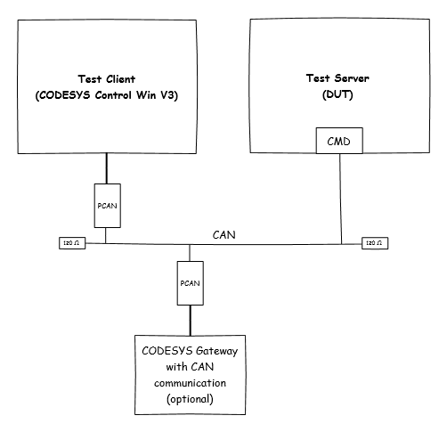
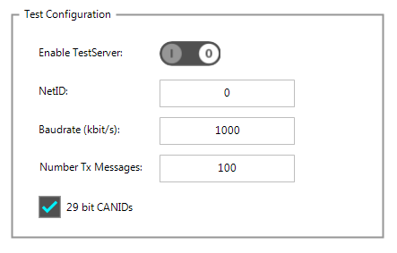
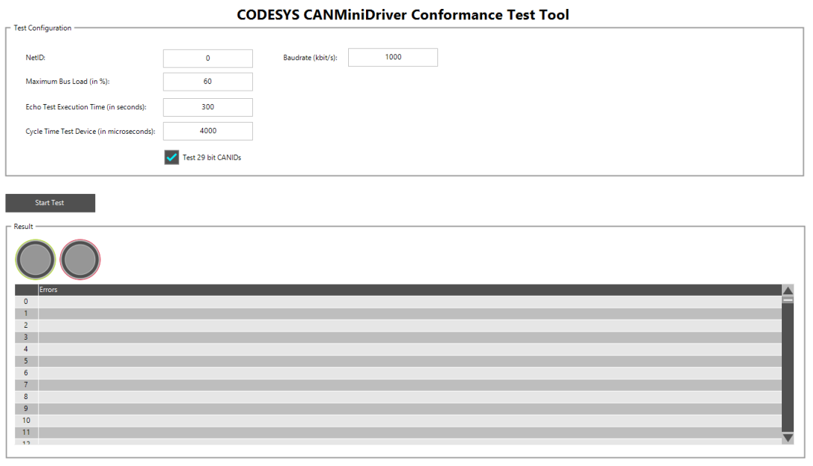
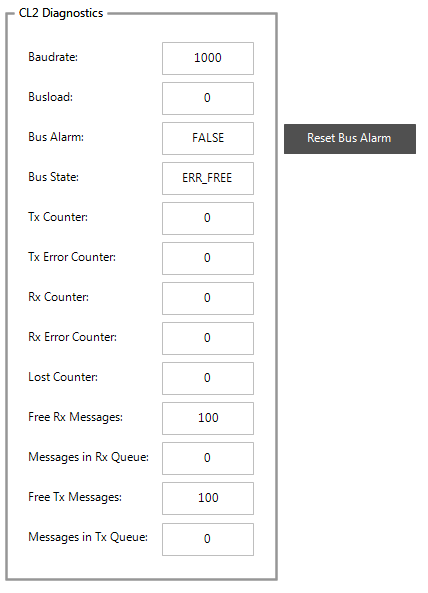
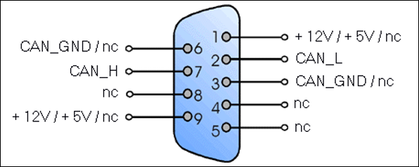

CANMiniDriver Conformance Test (automatic test)¶
Overview¶
The CANMiniDriver Conformance Test consists of two applications: a test server application that runs on the device under test (DUT) and a client application designed for a CODESYS Control Win V3 with PCAN interface.

Figure 21: Test setup
- It echoes all CAN messages with an incremented CAN-ID except of following IDs:16#0 (Test Control message IDs)16#80-16#FF (CANopen Emergency IDs)16#580-16#67F (CANopen SDO IDs)Note: CAN IDs used for Blockdriver communication are not echoed. Therefore, block driver communication can be used in parallel.
- It checks the message data consistency: All received message must have a sequence counter in the first byte (if DLC is greater 0). The sequence counter is incremented with every message.All other bytes contain the incremented value of their predecessor.Example of a valid message sequence:ID 0x30, DLC=8: 00 01 02 03 04 05 06 07ID 0x700, DLC=1: 01ID 0x703, DLC=0; (Sequence counter = 2)ID 0x20; DLC=3; 03 04 05
It logs error information to the PLC logger.
It provides an integrated visualization with CAN Hardware configuration settings and diagnostic information.
The test client application performs the following tasks:
It provides a visualization for test configuration.
It generates bus traffic over a PCAN interface and checks the echoed messages received from the test device:
Are the sequence counters in the correct order?
Is each message information echoed correctly (Data, DLC, RTR, EID,…)?
Are all messages echoed? ( Tx count should be equal to Rx count).
It shows the test result in the visualization.
Requirements¶
CODESYS 3.5 SP9 or higher
CODESYS Control Win V3 with Peak CAN interface (e.g. Peak PCAN USB Dongle)
CMDConformanceTest project (included in runtime delivery: Templates/CANMiniDriverConformanceTest)
Test procedure¶
Open CMDConformance project (Templates/CANMiniDriverConformanceTest/CMDConformanceTest.project) and press “Update all” if Project Environment dialog opens.
Preparations for the test server¶
Update DeviceToTest Device to your PLC device description.
Download DeviceToTest.Application to your test device. Start the application.
Open the integrated visualization ( double-click Visualization in the device tree).

Figure 22: Test configuration
Set the following settings:
NetID of the CAN interface, e.g. 0
Baud rate (recommended: 1000)
Number of Tx Messages (recommended: 100)
29 bit CANID: Does your driver support 29-bit CANIDs (e.g. needed for J1939)
Switch on “Enable Testserver”
The driver will be opened by calling CMD_Init and the visualization shows all diagnostic counters.
If an error occurs (no diagnostic counters will be shown), then check your test configuration. If NetID was correct, then check the implementation of CMD_Setup (normally called in CH_INIT3 hook) and CMD_Init (called on Cl2.DriverOpenH).
Preparations for the test client¶
Install the PCAN USB interface driver and activate the CmpPCANBasicDrv runtime system component in your CODESYS Control Win V3 installation. For more information and detailed instructions, see CODESYS Help topic “Inserting a PCAN USB adapter”.
Connect the PCAN interface to the test server (test setup see chapter 4.2.1).
Update Device “Tester” to the corresponding CODESYS Control Win V3 device.
Download Tester.Application to your CODESYS Control Win V3. Start the application. The visualization opens:

Figure 23: Conformance Test
Automatic test execution¶
Setup the Test Client:
Enter the NetID of PCAN interface (default: 0; see PLC logger).
Enter the same baud rate as configured on test server.
Enter maximal bus load (Recommended: 50-70%).
Enter “Echo test execution time” (default: 300 seconds).
Enter the test server cycle time (default: 20000us = 20 ms).
Select 29-bit CAN identifiers test if supported by MiniDriver.
IF CODESYS communication over CAN is used on the same CAN Bus, then it is recommended to log out from application to minimize bus traffic.
Press Start Test
The following tests are performed:
- Message Test:Different kind of messages are sent to the Test Server. It will be checked if all information is echoed correctly.
RTR messages
11-bit and 29-bit CANIDs
Different DLCs
- Echo Test:The bus load is generated and echoed messages will be checked for sequence and data errors. Furthermore, the message roundtrip time is measured.
Bus diagnostic test¶
In addition to the automatic test, it is also required to test bus error detection and BusOff recovery:
Open the integrated visualization of DeviceToTest.
The group box “CL2 Diagnostics” shows all MiniDriver diagnostic counters:

Figure 24: Bus Diagnostics
The Bus State should be ERR_FREE and Bus Alarm FALSE.
Now start the test on Test Client side. Check following diagnostic information:
Tx Counter and Rx Counter are incremented.
Lost Counter is 0.
Tx Error and Rx Error Counter is 0.
Bus State remains ERR_FREE and Bus Alarm FALSE.
Now generate a bus failure: Short circuit CAN Low and CAN High some seconds:

Figure 25: CAN Sub-D
- The Bus State signals a bus error – normally bus off. In bus off state, most CAN chips need a reset command. This will be signaled by Bus Alarm = TRUE. As long as Bus Alarm is TRUE, no messages will be sent or received (Tx an Rx Error Counter remain values).Now the application has to trigger a Reset Bus Alarm command which leads to a CMD_ResetAlarm call. In this function, the MiniDriver has to reset the chip.You can test this functionality by pressing the “Reset Bus Alarm” button.Then check the following:
Bus Alarm should change to FALSE.
Bus State is not equal to BUS_OFF.
RxCounter and TxCounter will be incremented again (if Test Client sends still messages). Driver sends and receives messages again Reset Bus Alarm implementation is correct.